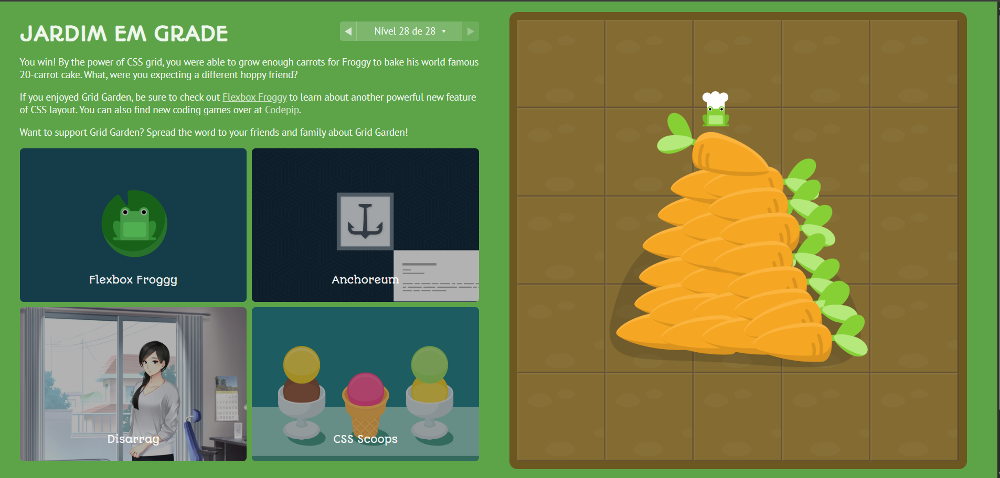

Conclui o jogo:

Nessa fase utiliza-se apenas uma linha para definir grid-column-start e grid-column-end, separando-os por uma barra.
Na imagem, o código já mostra o #water configurado com grid-column: 4/6; (o que significa que começa na linha vertical 4 e termina na linha 6, ocupando as colunas 4 e 5). Para completar a fase e regar todas as cenouras que aparecem no canto superior direito (colunas 4 e 5, linhas superiores), precisará também de garantir que a linha (grid-row) abrange as linhas corretas.